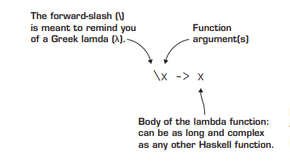
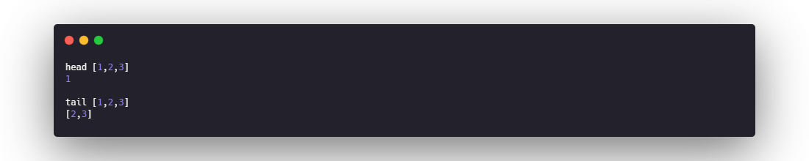
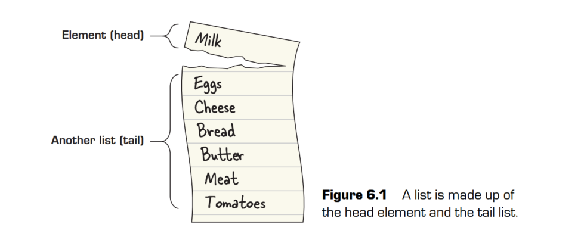
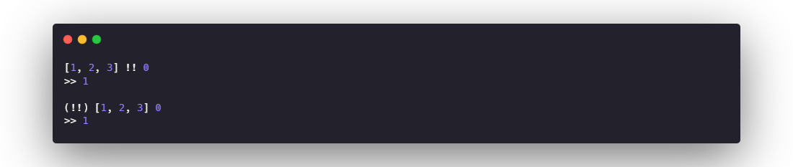
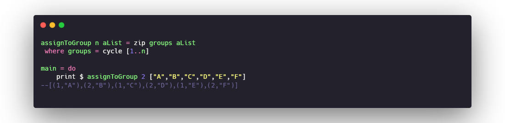
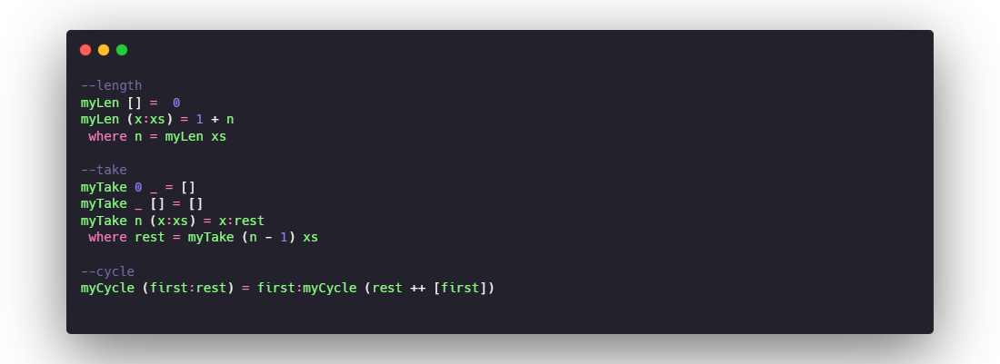
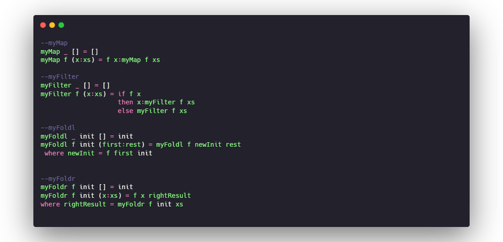

Haskell01 - Foundations of functional programming
01. Functions
All functions in Haskell follow three rules that force them to behave like functions in
math:
- All functions must take an argument.
- All functions must return a value.
- Anytime a function is called with the same argument, it must return the same
value
The third rule is part of the basic mathematical definition of a function. When the rule
that the same argument must always produce the same result is applied to function in a
programming language, it’s called referential transparency.
02. LAMBDA FUNCTIONS AND LEXICAL SCOPE
Lambda functions
One of the most foundational concepts in functional programming is a function without
a name, called a lambda function (hence lambda calculus). Lambda functions are often
referred to using the lowercase Greek letter λ. Another common name for a lambda
function is an anonymous function.

Practical lambda functions and lexical scope
IIFE works on exactly the same principles as our example of replacing a where statement. Whenever you create a new function, named or not, you
create a new scope, which is the context in which a variable is defined. When a variable is
used, the program looks at the nearest scope; if the definition of the variable isn’t there,
it goes to the next one up. This particular type of variable lookup is called lexical scope.
Both Haskell and JavaScript use lexical scoping, which is why IIFE and your lambda function variables behave in a similar fashion.
03. FIRST-CLASS FUNCTIONS
The concept of first-class functions is that functions are no different from any other data
used in a program. Functions can be used as arguments and returned as values from
other functions. This is a deceptively powerful feature for a programming language to
have. It allows you to abstract out any repetitive computation from your code, and ultimately allows you to write functions that write other functions.
04 LISTS
Lists are the single most important data structure in functional programming. One of
the key reasons is that lists are inherently recursive. A list is either an empty list or an
element followed by another list
head tail
When taking apart a list, the main pieces are the head, the tail.The head is just the first element in a list.The tail is the rest of the list left over, after the head


cons(:)
To build a list, you need just one function and the infix operator (:),
which is called cons. you need to take a value and cons it with another list. The simplest way
to make a list is to cons a value with the empty list. _By definition, a list is always a
value consed with another list (which can also be an empty list)_
If you do want to combine two lists, you need to concatenate them by using ++
lazy evaluation
Haskell uses a special form of evaluation called lazy evaluation. In lazy evaluation,
no code is evaluated until it’s needed.
Common functions on lists
The !! operator
If you want to access a particular element of a list by its index, you can use the !! operator. The !! operator takes a list and a number, returning the element at that location in
the list. _any infix operator (an operator that’s placed between two values, such as +) can also be used like a prefix function by wrapping it in parentheses_

partial application
_Using prefix notation can often make things such as partial application easier. Prefix
notation is also useful for using operators as arguments to other functions. You can still
use partial application with an infix operator; you just need to wrap the expression in
parentheses_
length
give the length of the list
reverse
reverse the list
elem
The elem function takes a value and a list and checks whether the value is in the list.elem is a function that you may want to treat as an infix operator for readability. _Any
binary function can be treated as an infix operator by wrapping it in back-quotes (`)_
take and drop
The take function takes a number and a list as arguments and then returns the first n elements of the list. f you ask for more values then a list has, take gives you what it can, with no error.
zip
You use zip when you want to combine two lists into tuple pairs. The arguments to zip
are two lists. If one list happens to be longer, zip will stop whenever one of the two lists
is empty.
cycle
cycle uses lazy evaluation to create an infinite list. Given a list, cycle repeats that list endlessly.

05 RECURSION AND PATTERN MATCHING
In general, something is recursive if it’s defined in terms of itself.
Rules from Recursion
- Identify the end goal(s).
- Determine what happens when a goal is reached.
- List all alternate possibilities.
- Determine your “rinse and repeat” process.
- Ensure that each alternative moves you toward your goal.
Pattern matching
Haskell has an amazing feature called pattern matching
that allows you to peek at the values passed as arguments and behave accordingly.
- _Pattern matching, just like case, looks at the options in order_
- _pattern matching is that it can look only at arguments, but it can’t do any computation on them when matching_
- _it’s standard practice to use _ as a wildcard for values you don’t use_
Recursion on lists
implements built-in length take cycle

06 HIGHER-ORDER FUNCTIONS
A higher-order function is technically any function that takes another function as an argument.
Typically, when higher-order functions are mentioned, a specific group of them comes
to mind, and nearly all of these are used to abstract away common patterns of recursion.
The main reason that you use first-class functions, and therefore have higher-order
functions, is so you can abstract out programming patterns
map
The map function takes another function and a list as arguments and applies that
function to each element in the list.
filter
The filter function looks and behaves similarly to map, taking a function and a list as arguments and
returning a list. The difference is that the function passed to filter must be passed a
function that returns True or False. The filter function works by keeping only the elements of the list that pass the test
foldl(foldr)
The function foldl (the l stands for left) takes a list and reduces
it to a single value. The function takes three arguments: a binary function, an initial
value, and a list. The most common use of foldl is to sum a list.
implements map filter & foldl
